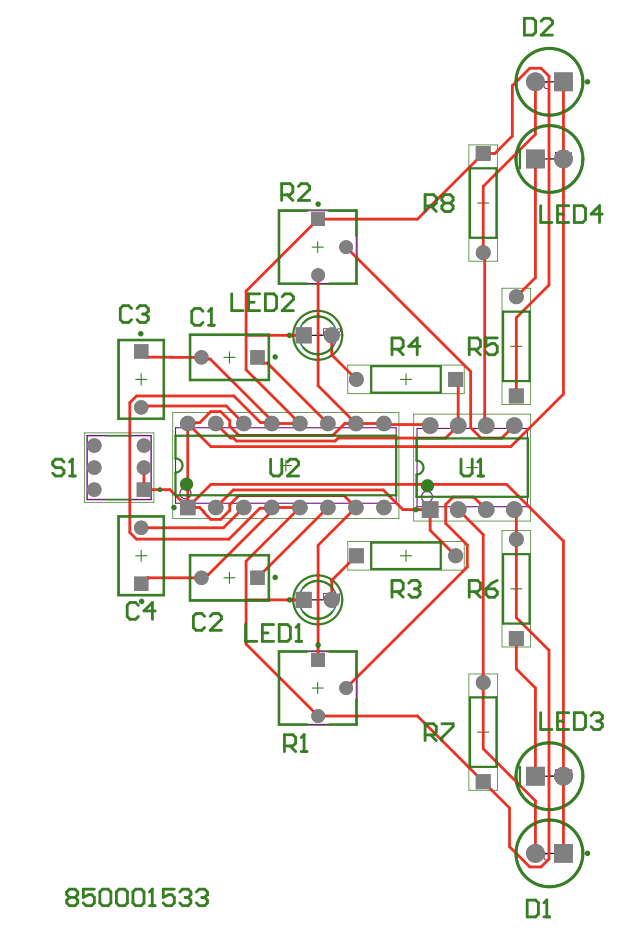

A fully analog autonomous robot designed to follow a path using sensor feedback and motor control.
Schematic design credit: Neutrino
Project Highlights
- Designed and manufactured custom PCB in Altium Designer
- Implemented analog motor control using H-Bridge drivers
- Integrated infrared sensors and operational amplifiers for real-time line detection
- Fully soldered and assembled the prototype using discrete components
Technologies Used
- Hardware: IR Sensors, DC Motors, Op-Amps, L293D motor driver”
- Software: Altium Designer
Outcomes
- Achieved stable, real-time path tracking purely through analog circuitry.